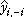
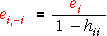
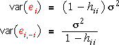

Need for a better way to detect outliers
Standardised residuals are an improvement — they all have equal variance when the model is correct. However they do not fully compensate for the effect of high leverage points if there are outliers.
Effect of outlier on standardised residuals
In the diagram below, you can alter the top-right data point in the scatterplot on the left by dragging it. The diagram initially shows how the ordinary residuals are affected.
Change the pop-up menu to display the standardised residuals on the right. Observe that this plot is more likely to be show up an outlier as a large or small standardised residual.
Even standardised residuals do not show up outliers well, especially if they are high leverage points.
Deleted residuals
An alternative approach to highlighting outliers is to use deleted residuals. These are defined as

where  is the prediction for the i'th point from the least squares line fitted to all data except the i'th observation.
Illustration
The diagram below shows a data set with a single high-leverage outlier. The least squares line (grey) is pulled close to this point so its residual does not stand out. (Its standardised residual is not exceptional either.)
The deleted residuals are plotted against x on the right of the diagram. Click on the rightmost cross in the scatterplot on the left. The blue line is the least squares line fitted to all data points except this one. The deleted residual is the red vertical distance from the point to this line.
Click on other crosses to see how their deleted residuals are calculated.
Calculating deleted residuals
Although it would seem from the definition of the deleted residuals that it is necessary to fit n separate least squares lines (omitting each observation once), there is a simpler formula for the deleted residuals that only depends on the ordinary residuals and the leverages,

This formula explains why the deleted residuals give extra weight to the high-leverage points.
Problem with deleted residuals
Although the deleted residuals do highlight the outlier in the example above, they have one major problem. Whereas the ordinary residuals have smaller variance for high leverage points, the deleted residuals have larger variance for the same points. It can be shown that

Standardising the deleted residuals therefore results in the same values as standardising the ordinary residuals.

Ordinary deleted residuals do not offer anything new.